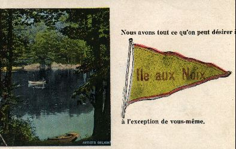
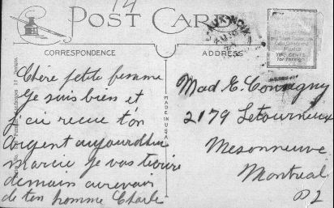

CHEZ
LES CONSIGNY
CHEZ
LES CONSIGNY
LES CONSIGNY LES CÔTÉ CHARLES ET ÉZILDA
|
LES CONSIGNY LES CÔTÉ CHARLES ET ÉZILDA |
|
Cette carte n’est pas datée mais par l’estampille de la poste nous pouvons voir ‘ île aux Noix 20 août 19—‘   Chère petite femme je suis bien et j’ai recue Mad E. Consigny Ton argent aujourdhui Marcie je vas tecrire 2179 Letourneux Demain aurevoir de ton homme Charle Mesonneuve Montreal P.Q. Chère petite femme, je suis bien et j’ai reçu Madame É. Consigny Ton argent aujourd’hui. Merci, je vais t’écrire 2179 Consigny Demain. Au revoir, de ton homme Charles Maisonneuve Montréal P.Q.
|